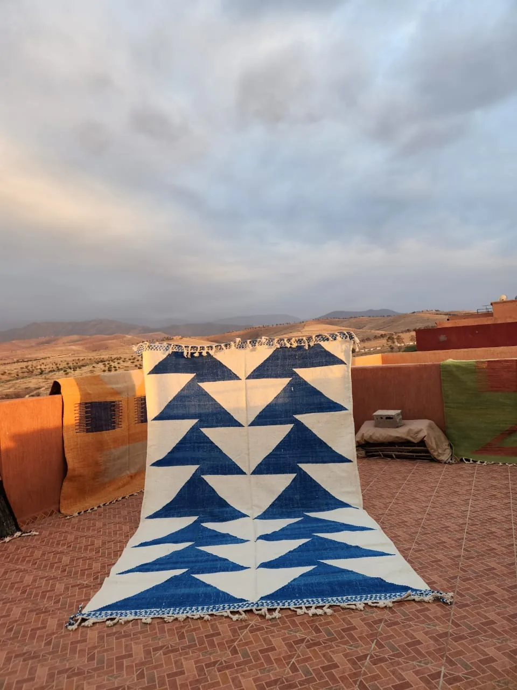
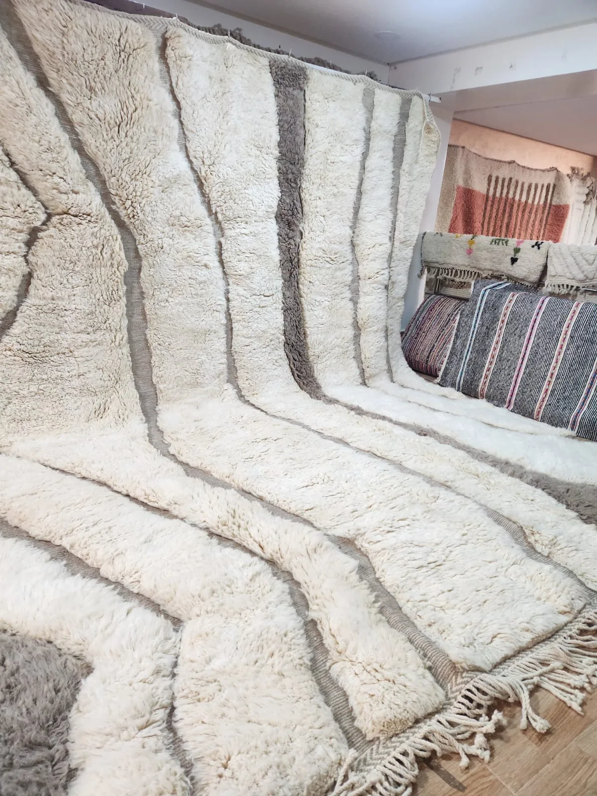

Halima — Ivory & Blush Abstract Contemporary
A hand-knotted contemporary rug in ivory wool. Bold blush pink and terracotta shapes occupy the field in an asymmetric, painterly composition — each form distinct, the whole quietly striking.
View the rug →
Nawal — Dark Teal Diamond Lattice Mrirt Runner
A Mrirt runner woven in deep teal wool, its full field crossed by an all-over ivory diamond lattice. The high pile gives it weight and warmth; the colour gives it presence.
View the rug →
The Complete Guide to Moroccan Rugs
Every Moroccan rug style explained in one place — Beni Ourain, Boujaad, Mrirt, Kilim, Contemporary, Azilal and Boucherouite — plus how to buy, size, and care for one.
Read the guide
The Complete Guide to Beni Ourain Rugs
The most sought-after Moroccan rug in the world. From the High Atlas villages where they're made, to how to spot a genuine one.
Read the guide
How to Tell if a Moroccan Rug is Authentic
Seven things to look for — and four red flags that tell you a rug is machine-made or misrepresented.
Read the guide
How to Clean a Moroccan Wool Rug Without Ruining It
The right way to clean, spot-treat and deep-wash a Berber wool rug — and the common mistakes that cause irreversible damage.
Read the guide
The Complete Guide to Boujaad Rugs
Bold color, loose geometry, no two alike. Where Boujaad rugs come from, how to spot a genuine one, and how to style that color without it taking over the room.
Read the guide
The Complete Guide to Moroccan Kilim Rugs
No pile, no knots — just flat-woven geometry. How a kilim differs from a pile rug, where it works best, and how to spot a genuine one.
Read the guide
The Complete Guide to Contemporary Moroccan Rugs
Modern designs, hand-knotted by the same weavers behind our traditional pieces. Why "contemporary" doesn't mean less authentic.
Read the guide
The Complete Guide to Mrirt Rugs
Often called "the modern Beni Ourain" — the Middle Atlas tradition that pairs the same high pile with a bolder color palette.
Read the guide
Azilal & Boucherouite: Free-Form Weaving Traditions
One improvised on the loom, one woven from recycled fabric. Two traditions that break from Morocco's geometric weaving conventions entirely.
Read the guide
Moroccan Rug Styling Guide
Simple, practical ways to choose, place, and style a handmade Moroccan rug — by room, by style, by colour, and by the mistakes worth avoiding.
Read the guide
How Much Does a Moroccan Rug Cost?
Real prices by size and format — what actually determines cost, and what to be wary of when a price looks too good to be true.
Read the guideMoroccan Rug Sizing Guide
How to choose the right rug size for a living room, bedroom, dining room or hallway — with real measurements, not guesswork.
Read the guide
Living Room Rug Guide
Sofa layouts, coffee table clearance, open-plan spaces, and which styles work best — size and placement for the room that matters most.
Read the guide
Bedroom Rug Guide
Under the bed, beside it, or as a runner — sized for twin, queen and king frames.
Read the guide
Dining Room Rug Guide
Chair clearance math, and why flat-weave beats pile in the one room where construction matters more than style.
Read the guide
Beni Ourain vs Mrirt
Same construction, same Atlas Mountains origin — what actually separates the two, and how to choose between them.
Read the guide
Hand-Knotted vs Tufted vs Machine-Made
Three different constructions get called "handmade" — what genuinely separates them, and how to tell which one you're buying.
Read the guide
Vintage vs New Moroccan Rugs
Natural dyes, wear character, and availability — what actually distinguishes the two, and how to choose.
Read the guide
Rug Layering Guide
Proportion rules, material pairing, and which Tiziri styles work best as the top layer.
Read the guide
Moroccan Rug Gift Guide
Housewarmings, weddings, and anniversaries — how to choose a size and style for someone else's home.
Read the guide